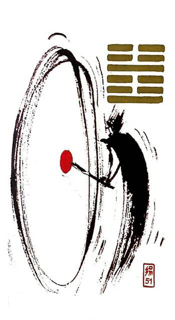

중뢰진
평괘 24
우레 - 움직임/장남, 신문고 연상(=유니버셜웨이트 타워카드)
변화의 소식이 들려오니 상황이 불안하다누군가 큰 북을 요란하게 치고 있고그 소리에 화들짝 놀라는 상황을 표현한 그림
벼락.우레.진동하는 움직임.몹 시두려워함.사나운 모양.깨우침.충격.대변동.위기.각성하다.극적인 힘의 변화.예측불가능.긴장감.격변.갑작스러운사건.소식
연애운
과거의 인연으로부터 갑작스러운 연락.소식이 들려옴. 긴장감.짜릿한 관계
사업운
불편.심장 철렁한 일.스트레스.
속마음
썸설레이는 마음.긴장하는 마음
1년 이상돌발상황으로 긴장하는 마음.깜짝 놀란 마음
이별 후상대방 소식을 기다리며 조바심 나는 마음
솔로연애운
예전에 알던 사람에게 연락온다
건강운
고혈압.불면증.신경계통 조심